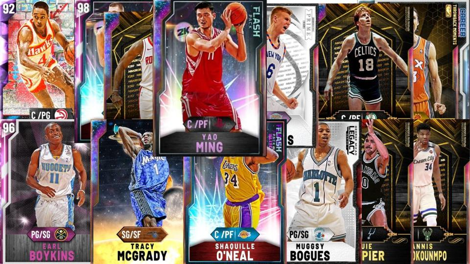

NBA2K21
NBA 2K21 is a basketball game simulation video game that was developed by Visual Concepts and published by 2K Sports, based on the National Basketball Association (NBA). It is the 22nd installment in the NBA 2K franchise and the successor to NBA 2K20. The game was released on September 4, 2020 for Microsoft Windows, Nintendo Switch, PlayStation 4, Xbox One, and Stadia, and on November 12, 2020 for PlayStation 5 and Xbox Series X and Series S. The PS4, Switch, Xbox One, and PC released to mixed reviews, with critics criticizing the lack of originality in the gameplay, as well as microtransactions and bugs.

A staple of the series, MyCareer, returns as one of the available game modes. MyCareer is a career mode in which the player creates their own customizable basketball player and plays through their basketball career. Players may make a male or female player, although female is only available on next-gen consoles. The Neighborhood also returns to MyCareer, as 2K Beach, in which players can customize their wardrobe, get haircuts and tattoos, and purchase boosts. They can also do their workouts and run drills to improve their attributes at their current team's practice facility. Progress in MyCareer may not carry over across generations, due to some changes made exclusively for next-gen.
